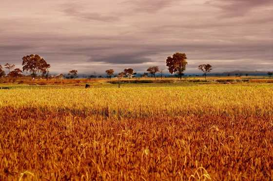
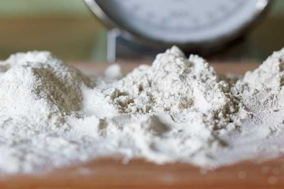
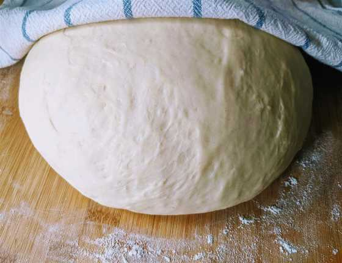
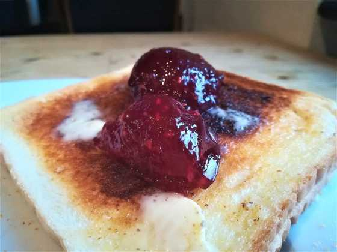
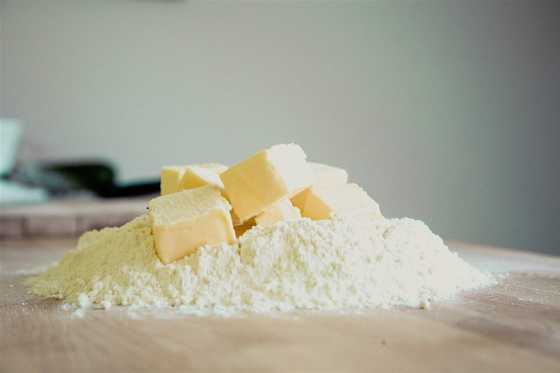
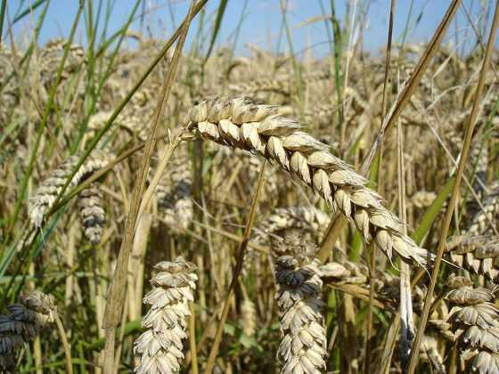
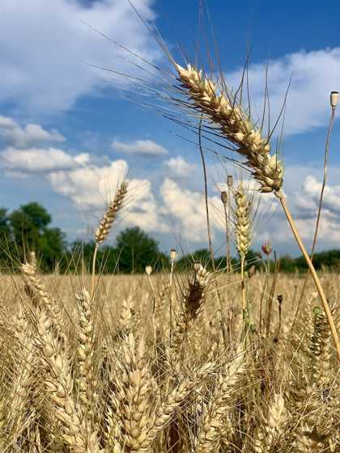

Boulangerie Volubex
ヴォルベックス
焼き立て、出来立て、作り立て。毎日の買い物のついでに立ち寄れる、町のパン屋さん。
和歌山県新宮市三輪崎1076-1(Aコープ ランティス店内)
Instagramを見る アクセスお店の由来・想い
ヴォルベックスは、新宮市三輪崎のAコープ ランティス店内にあるパン屋です。運営は株式会社Volubexで、「焼き立て、出来立て、作り立て」をモットーに、パンやサンドイッチ、蒸しパンを作って販売していると紹介されています(出典は求人情報ページなど)。
仕込み、成形、焼き、仕上げ、販売まで、それぞれの工程の人がひとつになって働くことを大切にしているそうです。夏休みには子ども向けのパン教室、JA主催イベントでのパン講座やサンドイッチ講座も開いていると紹介されています。
このページは、そうした「できたてを、身近な人へ」という姿勢から、素朴であたたかい小麦色の色合いでまとめました。店名の意味は確認できていないため、ここでは触れていません。



口コミ
以下は制作側が作成した「イメージ例」で、実在のお客様の声ではありません。
イメージ例
買い物のついでに寄れるので、焼き立ての香りにつられてつい手が伸びます。
イメージ例
朝食用の食パンを買いに行くのが楽しみになりました。トーストするとおいしいです。
イメージ例
サンドイッチの種類が選びやすく、お昼ごはんにちょうどいいです。



アクセス
- 住所
- 〒647-0061 和歌山県新宮市三輪崎1076-1(Aコープ ランティス店内)
- 電話
- 準備中
- 営業時間
- 準備中
- 定休日
- 準備中
- @boulangerie_volubex
